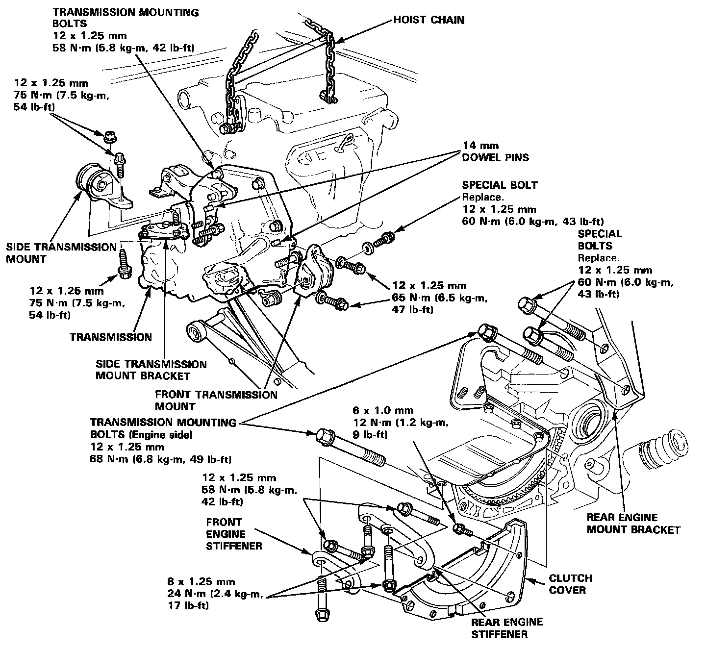
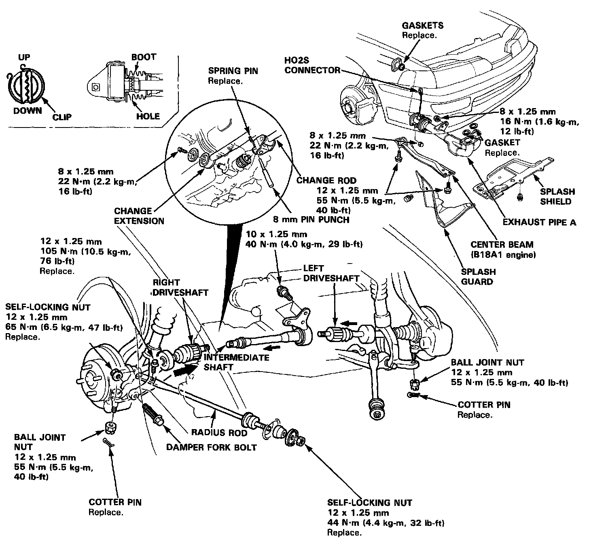
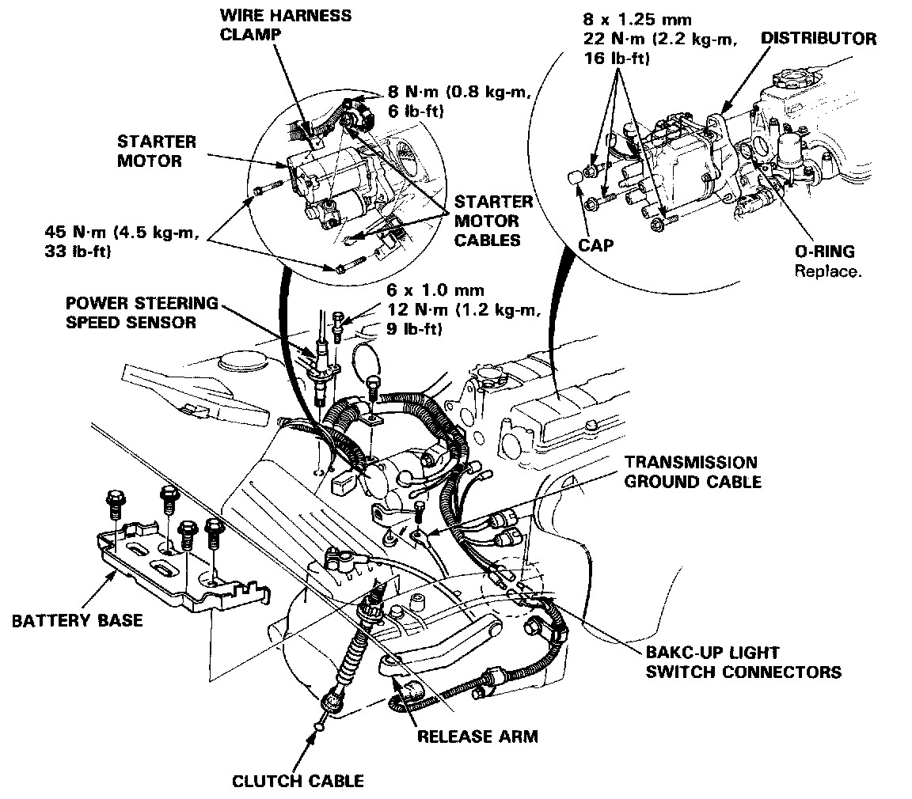

Installation

1. Place the transmission on the transmission jack, then raise it to engine level.
2. Check that the two 14 mm dowel pins are installed in the clutch housing.
3. Install the three upper transmission mounting bolts.
4. Install the two transmission mounting bolts (engine side).
5. Install the two rear engine mount bracket special bolts.
6. Install the side transmission mount bolts and nut.
7. Install the front transmission mount.
8. Install the clutch cover.
9. Install the front engine stiffener.
10. Install the rear engine stiffener.
11. Remove the hoist chain by removing the bolts.

12. Install the change extension and change rod.
NOTE:
- Install the clip on the change rod as shown in image.
- Turn the boot so the hole is facing down.
- Make sure the boot is installed on the change rod.
13. Install the intermediate shaft.
14. Install the left driveshaft, then install the left ball joint to the lower arm.
15. Install the right driveshaft.
16. Install the right radius rod.
17. Install the right damper fork bolt.
18. Install the right ball joint to the lower arm.
19. Install the exhaust pipe A, then connect the connector of the heated oxygen sensor (H02S).
20. Install the center beam (B18A1 engine).
21. Install the right front splash guard and splash shield.

22. Install the starter motor, then connect the starter motor cables and wire harness clamp.
NOTE: When installing the starter cable, make sure that the crimped side of the ring terminal is facing out.
23. Install the distributor and connect the distributor connectors.
24. install the power steering speed sensor.
25. Connect the back-up light switch connectors.
26. Connect the clutch cable to the clutch cable bracket, then connect to the release arm.
27. Connect the transmission ground cable.
28. Install the air cleaner assembly with the intake air duct.
29. Install the battery base.
30. Refill the transmission with oil.
31. Install the battery, then connect the battery positive (+) and negative (-) cables to the battery.
32. Adjust the clutch free play.
33. Check the ignition timing.
34. Check the transmission for smooth operation.
35. Check the front wheel alignment.